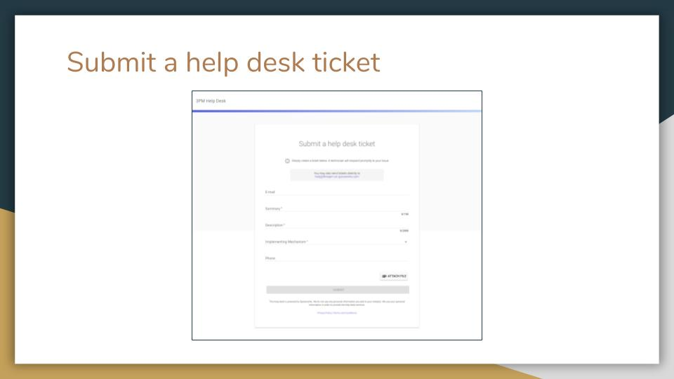

3PM Troubleshooting¶
During the use of the system, users of 3PM may experience certain issues. There are various mechanisms users can employ to solve the issues as follows:

2. 3PM Help Desk¶
3PM users can contact the Help Desk for support. This can be done through sending an email to help@threepm.on.spiceworks.com. You can also fill in and submit a ticket to the help desk on this webpage: threepm.on.spiceworks.com/portal/tickets.

Figure : Submit a Help Desk ticket
3. Clearing Browser Cache¶
Google Chrome
- Click the wrench icon on the browser toolbar.
- Select History and Recent tabs.
- Click History.
- Select clear browsing data.
- In the dialog that appears, select the checkboxes for the types of information that you want to remove.
- Use the menu at the top to select the amount of data that you want to delete. Select beginning of time to delete everything.
- Click clear browsing data.
- Once finished, close the browser.
Internet Explorer 9 and Above
- In Internet Explorer, click Tools. If you don’t see the menu, press Alt on your keyboard to show menus.
- Select Delete Browsing History.
- Select the checkbox next to Temporary Internet Files.
- Click Delete.
- It can take several minutes for the cache history to be deleted.
- Once the files have been deleted, click OK.
- Close the browser.
Mozilla Firefox 20 and above
- Click the Tools menu.
- Select History
- Select Clear Recent History. Under Time Range to Clear, select Everything.
- Select the Details checkbox.
- Select the Cache checkbox.
- Click Clear Now.
- Close the browser.